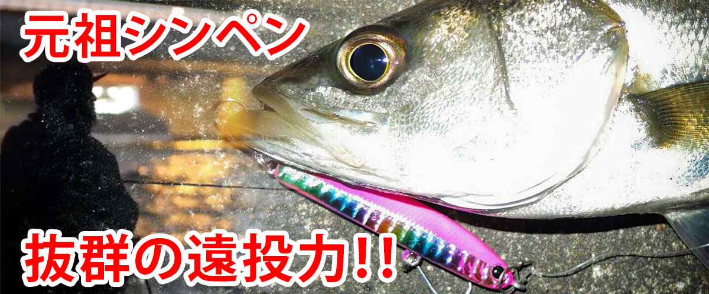

ワンダー80
（Wander 80）
ワンダー80（Wander 80）はLUCKY CRAFT（ラッキークラフト）のシンキングペンシルです。
「元祖シンペン」として長く使われてきた、ラッキークラフトのシンキングペンシル「ワンダー」の80mmモデルです。シンペンはただただひたすらにゆっくりただ巻き。流れや潮の変化で勝手にバランスを崩す瞬間がバイトのチャンスになる、シンプルで奥深い食わせのルアーです。

画像出典:ラッキークラフト公式HP
スペック
- メーカー
- LUCKY CRAFT（ラッキークラフト）
- タイプ
- シンキングペンシル
- 全長
- 80mm
- 自重
- 11.5g
- レンジ
- 0.1〜0.3m
- フック
- #8・#8
- カラー
- 多数（コラボ・限定カラーあり）
- ターゲット
- シーバスなど
▼今すぐチェック
ワンダー80の特徴
ゆっくり巻くだけで、流れの中で勝手にバランスを崩して食わせる元祖シンペン
-
ゆっくりただ巻きで食わせる
使い方はひたすらゆっくりただ巻き。流れの変化、潮の変化で勝手にバランスを崩し、その瞬間がバイトのチャンスになる。
-
一定層をユラユラ漂う
ボディ内の空気もうまく作用して、ある一定のレンジをゆっくりとユラユラ動かせる。すぐに沈みすぎないからこそ生まれる「食わせの間」が最大の特徴だ。
-
止めた時のユラユラとしたフォール
スイム中に時折見せる独特のバランスの崩れや、巻くのを止めた時にユラユラ揺れながら落ちていく動きが、魚がたまらずバイトする究極のアクションになる。
ワンダー80の使い方
基本は、とにかくゆっくりのただ巻き。キャストしたら0.1〜0.3mのレンジを、流れに任せるようにゆっくり巻いてくる。
流れや潮の変化でワンダーがバランスを崩した瞬間がバイトのチャンス。巻くのを止めてユラユラとフォールさせ、食わせの間を作るのも効果的です。
ワンダー80の得意な状況
河川や港湾で、表層付近のベイトを意識したシーバスを狙う状況が最大の出番。
ミノーやバイブレーションに反応しないスレた魚や、流れのある場所でナチュラルに漂わせて食わせたい場面で選びたい1本です。
ワンポイント
巻くスピードが速いと、ワンダーらしいバランスの崩れが出にくくなります。「遅すぎるかな」と思うくらいゆっくり巻くのがコツです。
2025年には、ブロビスとのコラボカラー（ワンダー80EGS）も登場しています。
ワンダーシリーズの使い分け
| モデル | 全長／自重 | 得意な場面 |
|---|---|---|
| ワンダー45 | 45mm／2.6g | ライトゲーム・トラウトなどの小型サイズ |
| ワンダー60 | 60mm／6.2g | 小さめのベイトに合わせるシンペン |
| ワンダー80 | 80mm／11.5g | シーバスの定番サイズ（本記事のモデル） |
| ワンダー95 | 96mm／21g | 飛距離が必要な場所・大きめのベイトに |
ワンダーは45・60・80・95の4サイズ展開。80はシーバスでもっとも使いやすい定番サイズだ。
オススメカラー
ワンダー80は多数のカラーを展開。シーバス狙いでオススメのカラーを紹介します。
イワシを模した定番のベイトカラー。
キビナゴなど小魚を食べている時のナチュラルカラー。
レッドヘッドの定番配色。夜や濁りでもシルエットを出せる。
白いシルエットで見せるパールカラー。夜のパイロットに。
画像出典:ラッキークラフト公式HP
ワンダー80に似ているルアー
-
デズー85
ブロビス
詳細はこちら＞
ソフト素材のハイブリッドシンキングペンシル。プラグに食い切らない魚に、柔らかいボディで追い食いさせたい時に。
-
 パンチライン80
アピア
詳細はこちら＞
パンチライン80
アピア
詳細はこちら＞
平たいヘッドで今どこを泳いでいるか分かりやすい80mmシンペン。流れの中でレンジを把握したい時に。
-
 モアザン スイッチヒッター85S
ダイワ
詳細はこちら＞
モアザン スイッチヒッター85S
ダイワ
詳細はこちら＞
よく飛ぶ85mmのシンキングペンシル。飛距離を出して広く探りたい時に。